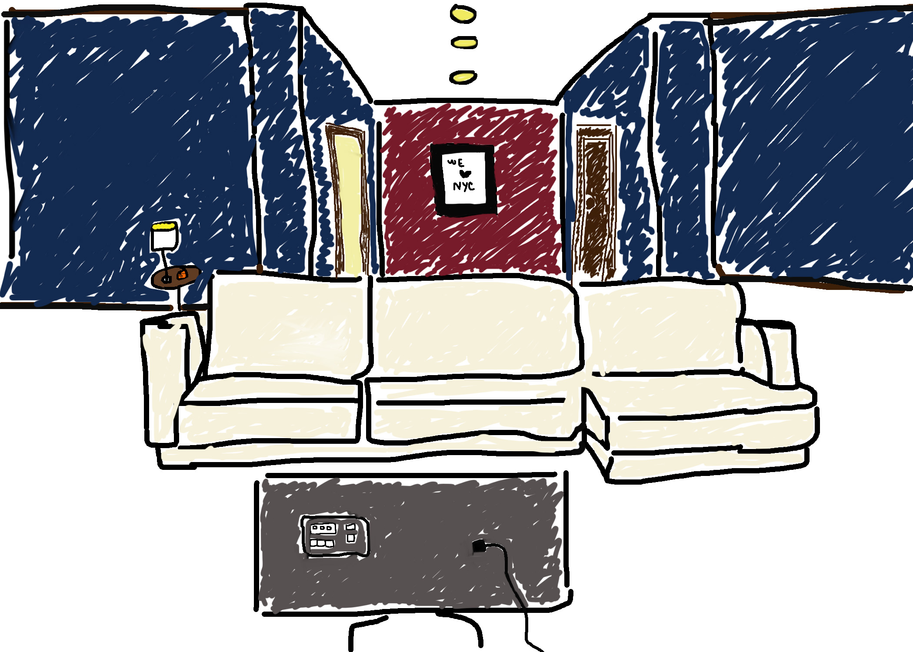

Sol is a teenager who lives in New York City. She had a long day at college, so she decided to stay home instead of going out with her friends on a Friday night. Her parents are out celebrating their anniversary.
That night She is alone in the apartment with her cat. She is watching a movie in the living room when she hears a noise from her room. She's very tired, so it's hard for her to decide what to do. Help her choose and see what happens next.
Will your choices lead Sol to a calm or scary moment?
Click the image to start:
